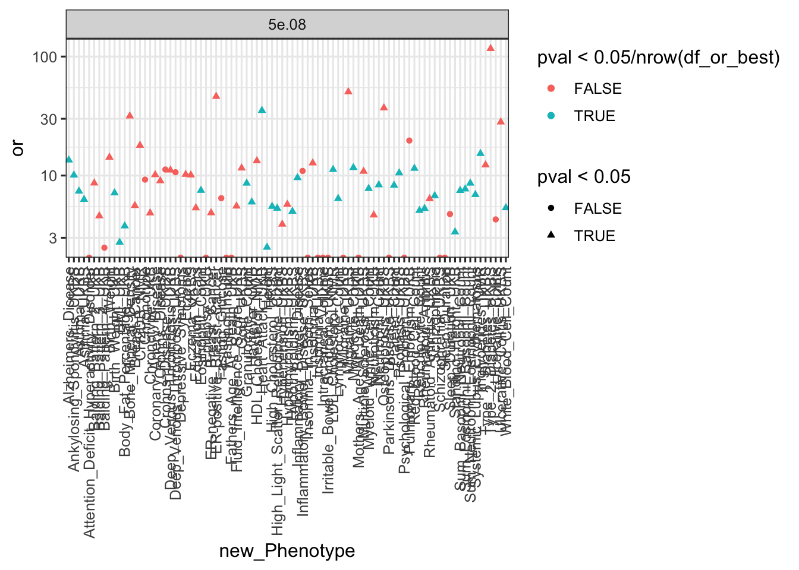
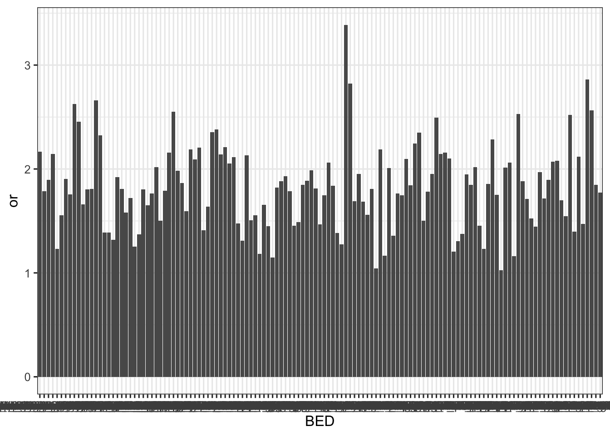

rm(list = ls())
library(ggplot2)## Need help? Try Stackoverflow: https://stackoverflow.com/tags/ggplot2.theme_set(theme_bw(base_size = 12))
library(dplyr)##
## Attaching package: 'dplyr'## The following objects are masked from 'package:stats':
##
## filter, lag## The following objects are masked from 'package:base':
##
## intersect, setdiff, setequal, unionlibrary(reshape2)
options(stringsAsFactors = FALSE)
source('https://gist.githubusercontent.com/liangyy/43912b3ecab5d10c89f9d4b2669871c9/raw/8151c6fe70e3d4ee43d9ce340ecc0eb65172e616/my_ggplot_theme.R')
source('rlib.R')
trait_meta = read.csv('https://bitbucket.org/yanyul/rotation-at-imlab/raw/a57edaa369ef6427cd0b43bf64f704c14c5c4add/data/GWAS_metadata.csv')trait_list = read.table('../trait_list.txt', header = F)$V1
pvals = c("5e.08", "1e.07", "1e.06", "1e.05", "0.0001", "0.001", "0.01")
cols = c('GWAS', 'BED', 'N_total', 'N_total_in_bed')
df = list()
for(trait in trait_list) {
fname = paste0('~/Desktop/tmp/gwas-abc/enrichment-odds-ratio/snp_count.', trait, '.tsv.gz')
if(file.exists(fname)) {
tmp = read.table(fname, header = T) %>% mutate(trait = trait)
for(pp in pvals) {
tmp2 = tmp[, c(cols, paste0(c('N_total_at_pval_lt_', 'N_in_bed_at_pval_lt_'), pp))]
colnames(tmp2)[5:6] = c('N_total_pass', 'N_in_bed_pass')
df[[length(df) + 1]] = tmp2 %>% mutate(pval_cutoff = pp)
}
}
}
df = do.call(rbind, df)# n11: in gwas and in bed
# n12: in gwas and not in bed
# n21: not in gwas and in bed
# n22: not in gwas and not in bed
# n2: in bed
# notn2: not in bed
df_or = df %>%
mutate(n11 = N_in_bed_pass, n12 = N_total_pass - N_in_bed_pass, n2 = N_total_in_bed, notn2 = N_total - N_total_in_bed) %>%
mutate(n21 = n2 - n11, n22 = notn2 - n12) %>%
group_by(GWAS, BED, pval_cutoff) %>% do(calc_odds_ratio(.$n11, .$n12, .$n21, .$n22))
df_or$pval_cutoff = factor(df_or$pval_cutoff, levels = pvals)
df_or$pval_cutoff_old = as.character(df_or$pval_cutoff)df_or_best = df_or %>% filter(pval_cutoff_old == '5e.08') %>% group_by(GWAS, pval_cutoff) %>% summarize(best_bed = BED[which.min(pval)])
df_or_best = inner_join(df_or, df_or_best, by = c('GWAS', 'pval_cutoff', 'BED' = 'best_bed'))
df_or_best = inner_join(df_or_best, trait_meta %>% select(Tag, new_Phenotype), by = c('GWAS' = 'Tag'))
p = df_or_best %>% ggplot() + geom_point(aes(x = new_Phenotype, y = or, color = pval < 0.05 / nrow(df_or_best), shape = pval < 0.05)) +
theme(axis.text.x = element_text(angle = 90, vjust = 0.5, hjust = 1)) + facet_wrap(~pval_cutoff, scales = 'free_y') + scale_y_log10(); p## Warning: Transformation introduced infinite values in continuous y-axis
ggsave('../output/best_enrich_of_ABC_enhancer_in_GWAS_loci.png', p, width = 14, height = 6)## Warning: Transformation introduced infinite values in continuous y-axisdf_or %>% filter(GWAS == 'GIANT_HEIGHT' & pval_cutoff_old == '5e.08') %>% ggplot() + geom_bar(aes(x = BED, y = or), stat = 'identity', position = 'dodge')
# add Bonferroni control
df_or = df_or %>% filter(pval_cutoff_old == '5e.08') %>% group_by(GWAS) %>% mutate(p_bonferroni = pval * n()) %>% ungroup()
df_or_signif = df_or %>% filter(p_bonferroni < 0.05)
list_celltype = list()
for(trait in unique(df_or_signif$GWAS)) {
list_celltype[[trait]] = df_or_signif %>% filter(GWAS == trait) %>% pull(BED)
}
yaml::write_yaml(list_celltype, '../simple_enrichment_biosamples.yaml')